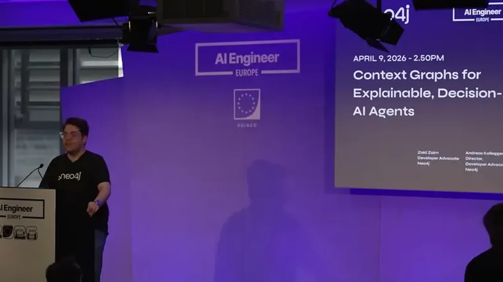
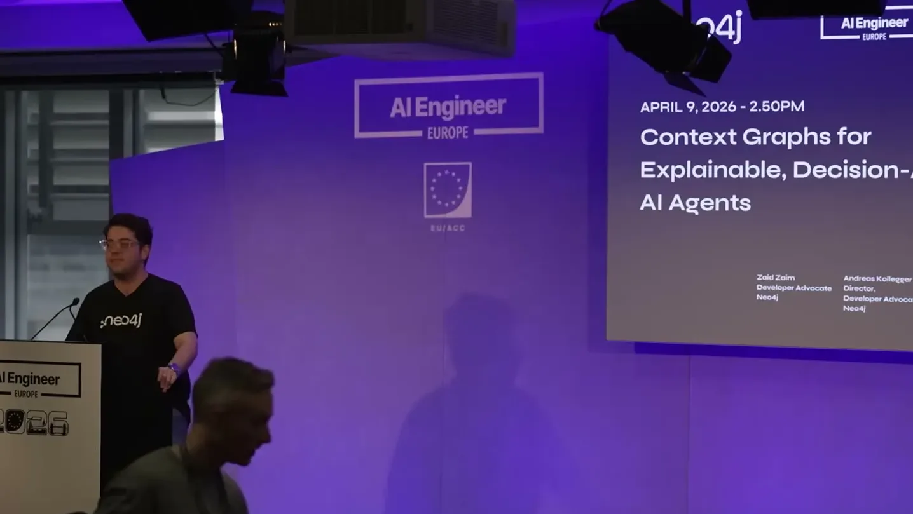
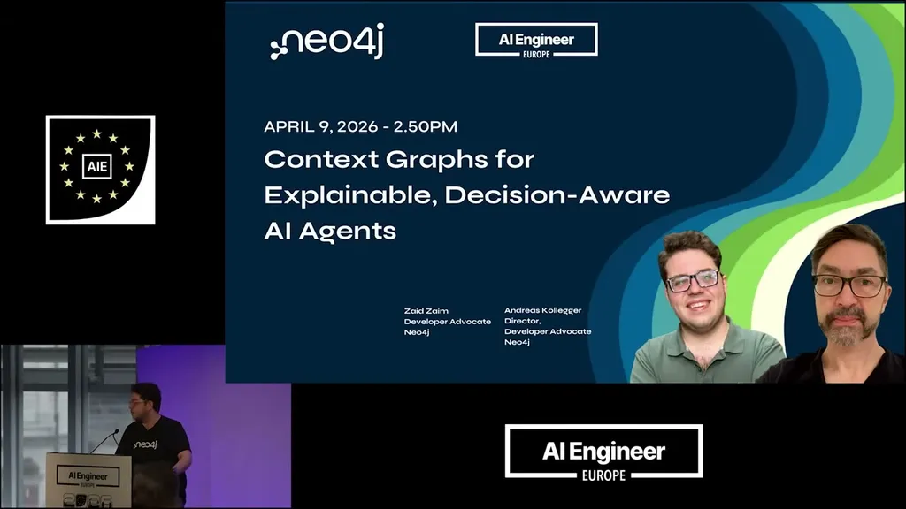
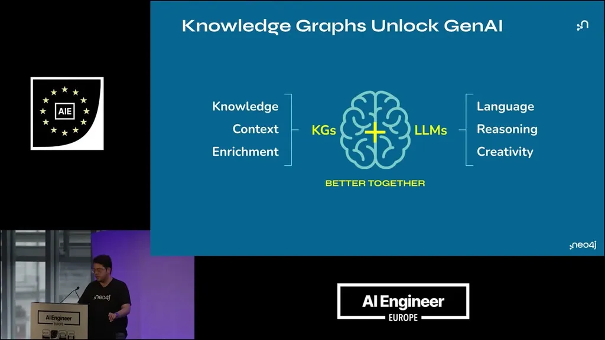
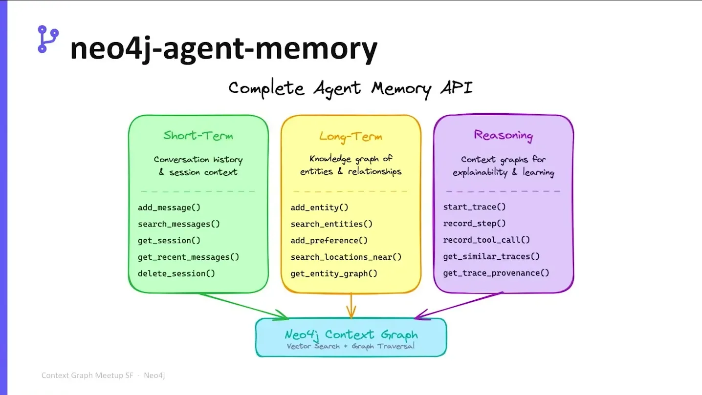
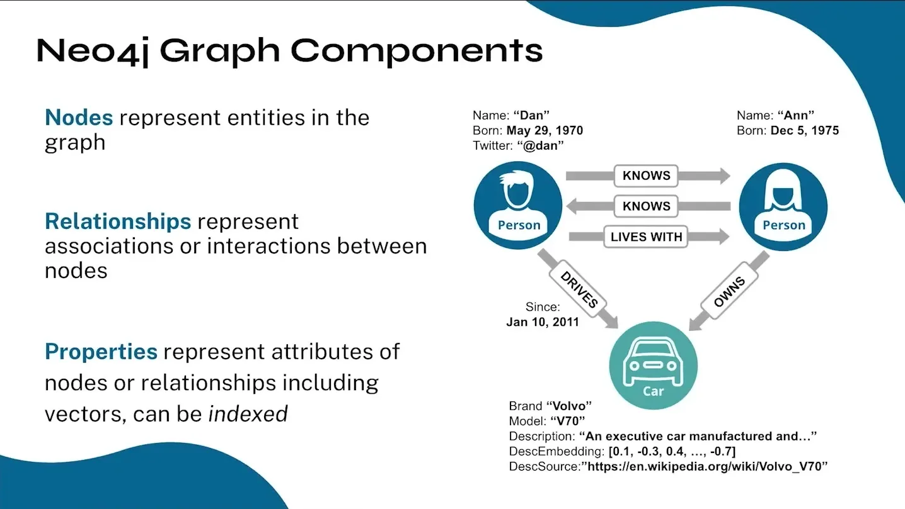
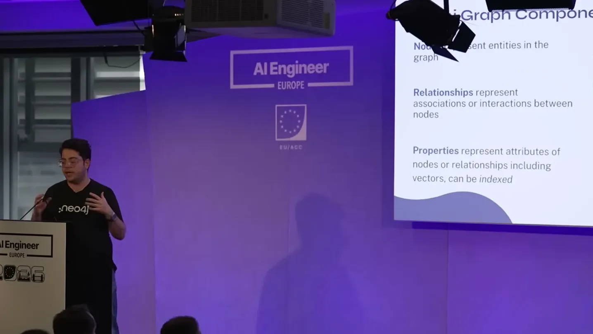
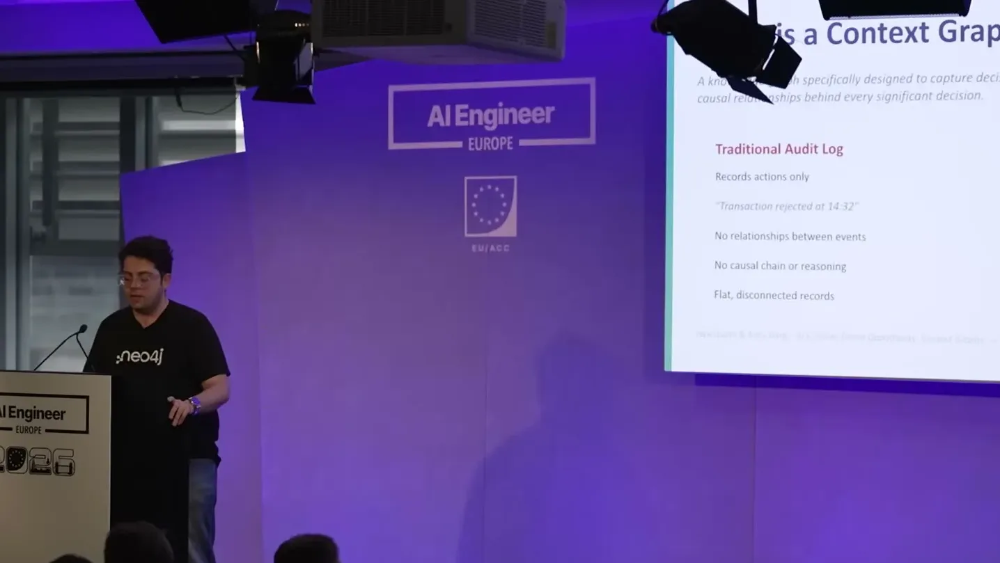
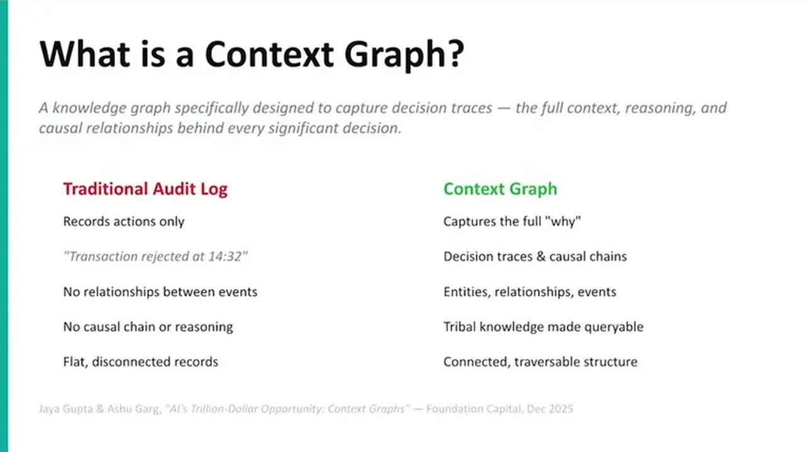

Proposes a concrete decision-making workflow (frame with local/global context, risk-value analysis with reference-class validation and reversibility checks, propose-then-authorize split, then record reasoning back into the graph) for age...
This traces the talk's proposed pipeline from decision gap to recorded precedent; exact escalation thresholds and how 'authority' is computed are not detailed in the talk (ours).
“with context graphs we would really like to um provide additionally to the knowledge um the right rules and policies um to the agents to help”
said at 03:40“decision-making is basically when you run into a point in the workflow or the life of the agent where it has to do something that it doesn't have in its setup”
said at 07:19“You went through some reasoning chain, you went through some actions, and suddenly you're at a point where like you have some amount of uncertainty”
said at 09:56“if you're in the small 1% of the population, giving that same drug might be fatal”
said at 12:30“This agent's job, only thing would be to like actually come up with a proposal of some alternatives, and to give some pros and cons for those alternatives, not to actually make the choice”
said at 13:42“That all gets saved into the graph along with the decision itself and the actions that were taken. That lets future agents do better at their job because they have this now as precedent that they can refer to”
said at 15:05The propose/authorize split maps closely to human org patterns (analyst recommends, manager approves) and could be a reusable pattern for any agent system operating with partial autonomy, though the talk stops short of showing a worked multi-agent implementation (ours).









| Stance | Claim | t |
|---|---|---|
| asserts | Context graphs extend context engineering by adding the rules and policies behind why an agent should act, not just knowledge, tools, and content. | 03:40 |
| asserts | Decision-making is the point where an agent must act on something not covered by its given instructions, illustrated by an autonomous fridge-restocking agent not knowing to prioritize rent money. | 07:19 |
| recommends | Decisions should be framed first with local context (causality, objective, environment) and then global context (prior actions and hard/soft business rules) before analysis. | 09:56 |
| warns | Population-level statistical behavior can mislead risk analysis for the minority case, illustrated by a drug that is correct for 99% of patients but fatal for the other 1%. | 12:30 |
| recommends | One agent should propose alternatives with pros and cons without deciding, while a separate agent determines authority to act and escalates to a human or higher-privilege agent when uncertain. | 13:42 |
| recommends | The full reasoning process behind a decision, including what was and wasn't considered, should be saved into the graph so future agents can use it as precedent. | 15:05 |
Machine-readable copy embedded in this page (script#ontology) and in the corpus ontology.